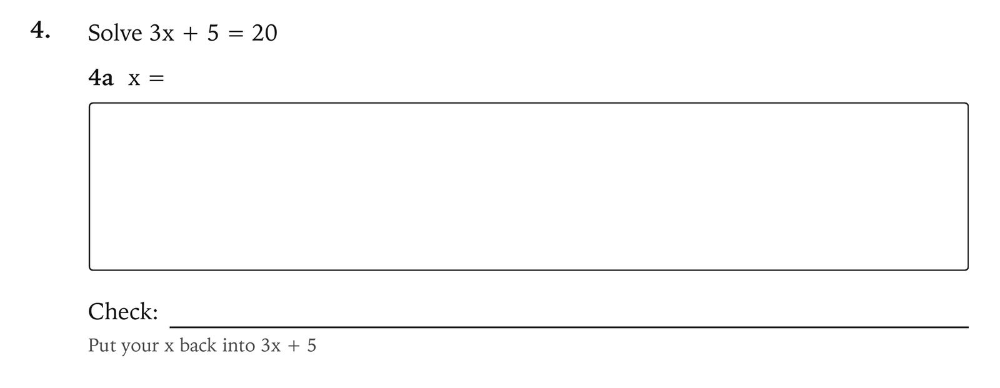

indelible
A tutor for teaching yourself anything, built as a skill for Claude Code. It plans backwards from your date, teaches from sheets you read and then close, marks your work from photos of the paper, and tests everything again, cold, two days later.
- tests, run on macOS, Linux and Windows
- 588
- lines of Python in its scripts, standard library only
- 17,743
- rules in the sheet checker
- 14
- network requests made by the scripts
- 0
Nothing counts until it survives 48 hours
A score on the day you learned something mostly shows that the explanation is still fresh. So every new skill is tested again two days later, on fresh questions, with nothing looked at in the 24 hours before, and that is the first score that counts. A question missed there comes back after 1 day, 3 days, 1 week and 3 weeks.
Every number the tool reports carries that label, measured or practice. The method was developed with one learner over about four weeks, which is not a controlled study. Its principles come from well-studied effects, retrieval practice, spacing and interleaving, and the intervals are defaults a learner can change.
Check backwards, in writing
Beside every answer goes one written check that runs the other way: put the answer back into the question, rebuild the total, or test the definition against the question’s words. Solving it again in your head tends to repeat the slip. A check on paper catches it, so drills and rechecks print a check line under every answer, with a hint while the topic is new.

Each sheet ends with one line, Least sure I chose the right idea, instead of a confidence mark on every answer. Doubt tends to fire on the arithmetic, while the costly mistakes are confident misreadings of a definition.
Three rules the model can’t skip
A skill is a set of instructions, and a model can break an instruction. So the three rules that matter most are enforced by the scripts, and Claude has to go through them.
-
A sheet Claude has written
the sheet checker
a sheet you can print
It refuses a measuring sheet that names its topic, an answer from the key anywhere in the text, and a drill with no check line.
-
Your attempt, filed as a photo or typed answers
the sealed key
the answer key, for marking
Keys are sealed when a sheet is built. A helper agent writes each sheet and its key to files, so the answers never pass through the chat.
-
The next session opens
the brief
what the last one skipped, done first
A session left open is closed first, missed sessions are asked about, and a recheck whose window has passed is dealt with before anything new.
The scripts are plain Python with no dependencies. They make no network requests, and a browser they start to print a sheet to PDF runs with its network blocked.
What a session opens with
When a session starts, Claude reads one summary, the brief. The scripts build it from plain files in a folder the learner chooses: what is due, how the last sessions went, and every number with the kind of evidence behind it.
$ python3 indelible.py brief
IELTS Academic · exam · 2026-12-12 (58 days left)
NOW/NEXT: today 07:00–07:15 2-day recheck (mixed) (15 min) · today 07:15–08:00 fixing mistakes: 2-day recheck first, then the mistakes from the diagnostic (45 min)
DUE: 2-day rechecks ready now: 1 · mistakes due: 1 slip · mistakes to fix before they come back: 1
MASTERY (0–5): Matching headings 2 · True, false or not given 1 · Task 1 overview 1 · Paraphrase 1
LAST SESSIONS:
Tue 13 Oct 07:00 · 52 of 60 min · 9 questions, 9 right · closed same day
Mon 12 Oct 07:00 · 50 of 60 min · 8 questions, 4 right · closed same day
PACE: mixed sheet about 142 s per question (1 sheet; plan 99 s) [measured] · reading about 100 s per question (1 sheet; plan 70 s) [practice]Installing it is two commands in Claude Code. Then you say what you are learning and by when, and answer a few questions.
claude plugin marketplace add romanprigodskii/indelible
claude plugin install indelible@indelible